Blender はオープンソースで開発されている３次元コンピュータグラフィックス (3D CG) 制作用ソフトウェアです．これはモデリング（物の形のデータを作る）機能やレンダリング（映像を作成する）機能のほか，アニメーション（動きをつける）機能やコンポジット（映像を合成する）機能，物理シミュレーション機能，それにゲームエンジン機能なども含む，統合化されたソフトウェアです．これを使ってさまざまな映像作品やゲームが作成されています (Sintel, the Durian Open Movie Project など)．
Blender は無料で配布されているソフトウェアですが，これも GIMP や Inkscape 同様，商用のソフトウェアに匹敵する機能を持っています（ので，同じくらい複雑です）．もともとは商用のソフトウェアとして開発されていましたが，数奇な運命をたどった後オープンソースソフトウェア化され，多くの人によって開発が続けられています．
Blender に関する日本語の情報は，blender.jp にあります．また，Blender Gulu には多くの美しいチュートリアルがあります．Blender の使い方については，いくつも書籍が出版されているほか，「Blender入門」というキーワードで検索すれば，操作方法を解説しているサイトがたくさん見つかると思います．
ここでは「CGrad Project - Blender Render チュートリアル」を参考にさせていただきました．ありがとうございます．自分で何か作ってみたいと思う人は，こちらのページを読むことをお勧めします．またこの方が書かれた「Blender 2.5 マスターブック」もお勧めします．私は本屋で何冊か比較してこの本に決めましたが，後でこのサイトの方が書かれたことを知りました．また，「札幌ゲーム製作者コミュニティ Kawaz」に「Blender超入門！勉強会札幌 第１回マニュアル」「Blender攻略本２ −超！入門モデリング−［美味しい珈琲編］」が公開されています．九州産業大学の「OpenSquare | 井上貢一研究室」では「Blender/TutorialVideo」に豊富なチュートリアルビデオを公開されていらっしゃいます．ありがとうございます．
Blender には Linux 版のほか，Windows 版や Mac OS X 版もあります．これらは blender.org - Get Blender から入手することができます．
Blender を起動するには「アプリケーション」メニューの「グラフィックス」にある「Blender」を選択してください．
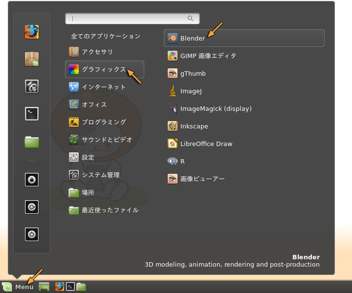
コマンドで起動することもできます．
| Blender を起動する |
|---|
% blender &[Enter]
|
起動したときに表示されるバージョンの表示は，マウスでクリックすれば消えます．
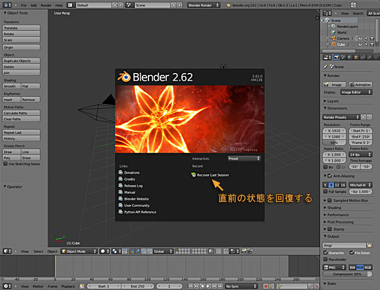
この画面で立体の形状を作成します．図形が表示されている領域（とその左）を 3D View と呼びます．最初の状態では，原点を中心とする立方体が１個だけ表示されており（真上から直交投影で見ているので，正方形に見えます），それが選択されている状態(周囲が紫色)になっています．この空間には，他に光源とカメラが存在します．
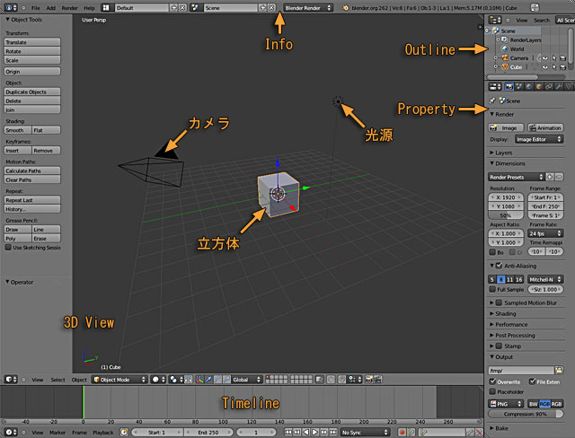
視点の位置の変更などの画面表示の操作は，マウス（中ボタン），キーボード（テンキー），それにメニューから行うことができます．メニューによる操作の多くには，キーボードによる操作（ショートカット）が割り当てられています．
マウスの中ボタンを押しながらマウスをドラッグすると，見る方向をぐるぐる移動できます．
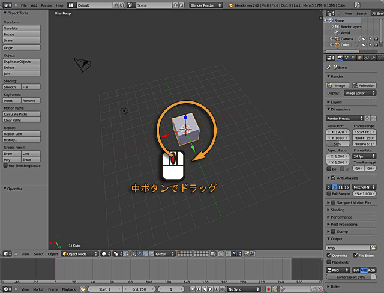
マウスの中ボタン（ホイール）を回すと，表示がズームイン・ズームアウトします．
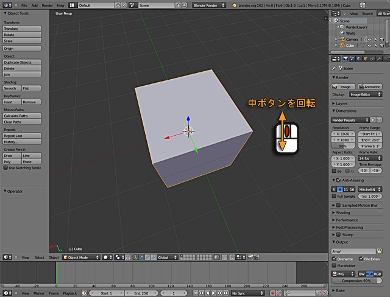
キーボードの [Shift] を押しながらマウスの中ボタン（ホイール）を回すと，表示が上下にパン（スクロール）します．
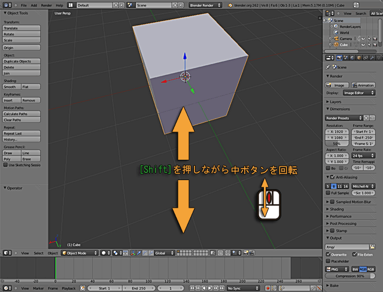
キーボードの [Ctrl] を押しながらマウスの中ボタン（ホイール）を回すと，表示が左右にパン（スクロール）します．
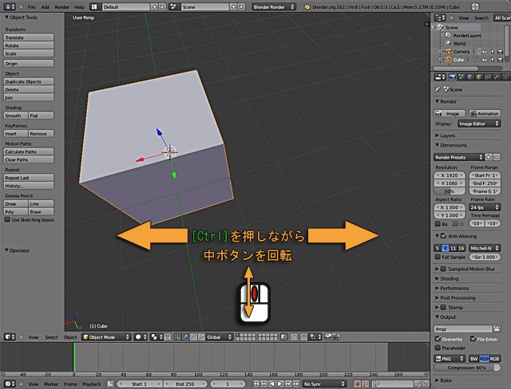
画面表示はキーボードを使って操作することもできます．主にテンキー（下図）を使います．
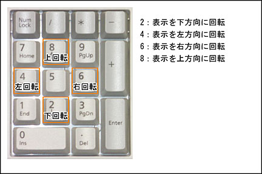
テンキーの 2, 4, 6, 8 で画面表示の方向を回転します．
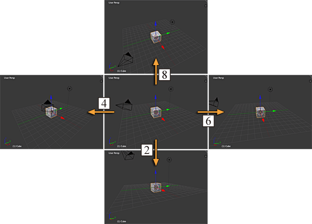
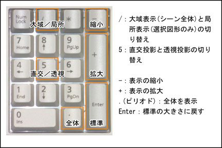
テンキーの 5 をタイプすると直交投影表示と透視投影表示を切り替えます．/ (スラッシュ)をタイプすると選択している図形のみを表示します（局所表示)．もう一度 / をタイプすると全体を表示します（大域表示)．. (ピリオド)をタイプすると選択している図形を表示領域いっぱいに収まるようにします．[Home] キーをタイプするとシーン全体が表示領域に収まるようにします．[Shift]-C（[Shift] を押しながら C）をタイプすると，3D カーソルが原点に戻ります．なお，下の図では説明のために球も表示していますが，Blender の起動直後はこの球はありません．
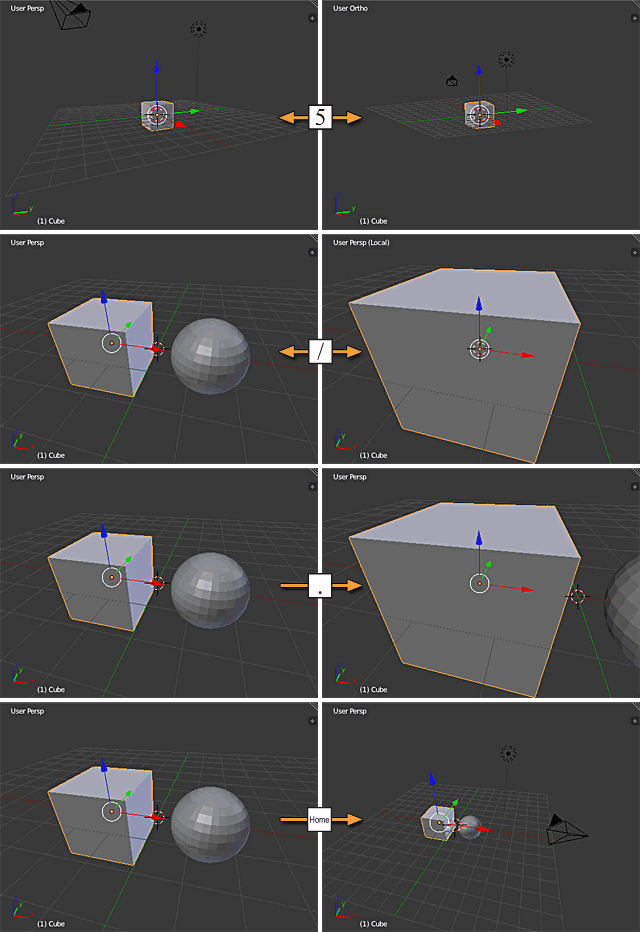
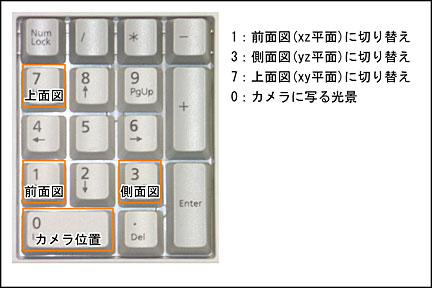
テンキーの 0, 1, 3, 7 で画面表示を行う方向を切り替えます．0 をもう一度タイプすると，以前の画面表示に戻ります．
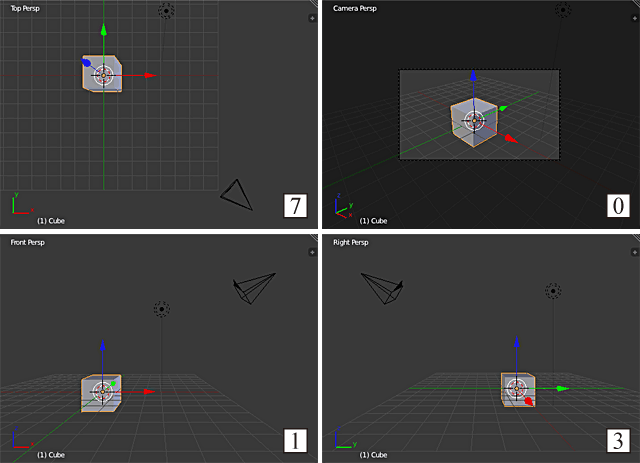
[Ctrl] と [Alt] を押しながら Q をタイプすると，三面図表示になります．
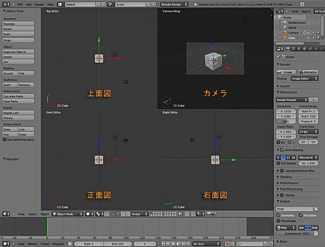
もう一度 [Ctrl] と [Alt] を押しながら Q をタイプすると，現在マウスカーソルのある図だけが表示されます．
3D View (図形が表示されている領域) の左下の View メニューからも，画面表示を操作することができます．
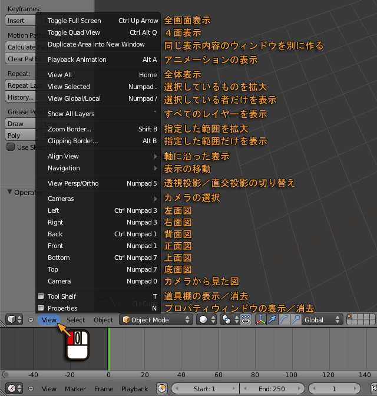
このうち Align View，Navigation，および Cameras にはサブメニューがありますが，ここでは説明は割愛します．自分で操作してみて，何が起こるか確認してください．
図形を選択するには，マウスの右ボタンで図形をクリックしてください．この右ボタンで選択というのが，Blender の操作の上で最も特徴的な者だと思います．左ボタンをクリックすると，そこに 3D カーソル（紅白の円）が移動します．
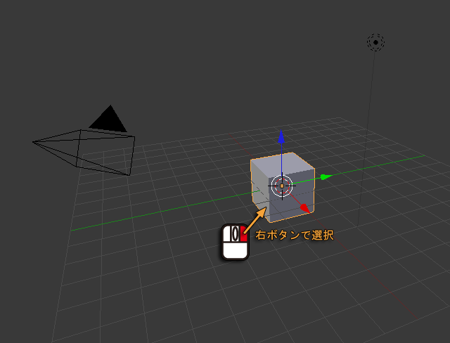
複数のものを選択する場合は [Shift] を押しながらマウスの右ボタンをクリックしてください．また，[Ctrl] を押しながらマウスの左ボタンをドラッグすれば，ドラッグした領域に含まれているものが選択されます．
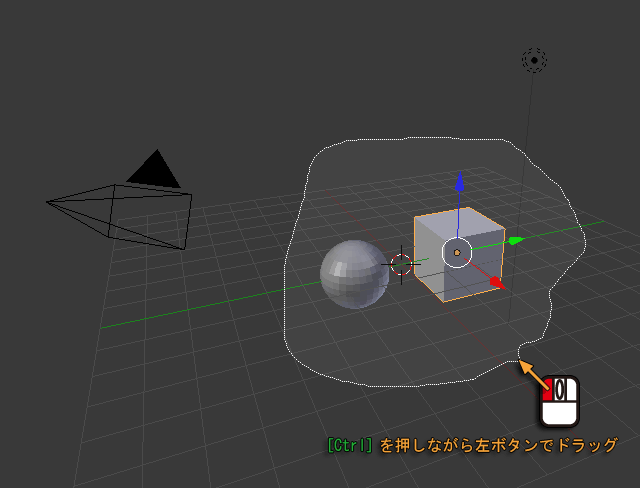
選択から除外したいときは，[Shift] と [Ctrl] を同時に押しながらマウスの左ボタンをドラッグしてください．
図形を選択した後，画面のどこかをマウスの右ボタンを押しながらドラッグするか，道具棚 (Tool Shelf) の Object Tools の Transform の Translate ボタンをクリックするか，キーボードの G のキーをタイプする，のいずれかの操作を行えば，マウスの移動に連れて（マウスボタンを離しても）物体が移動します．
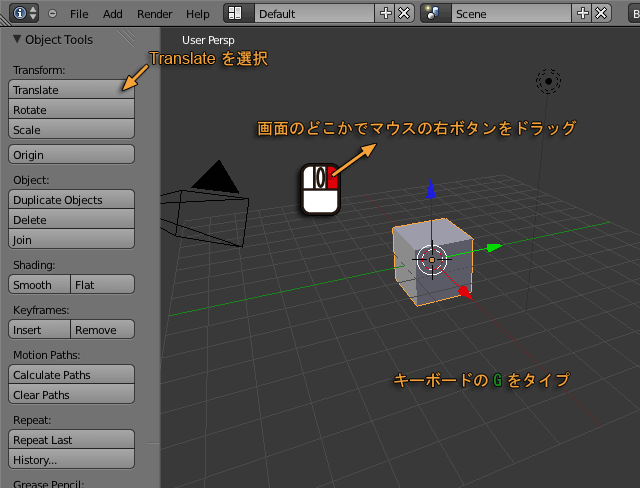
移動中に X，Y，あるいは Z のキーをタイプすれば，移動方向をその方向に制限できます．あるいは，選択した図形に表示されている軸（矢印）をマウスの左ボタンでドラッグしても，その方向だけに移動できます．
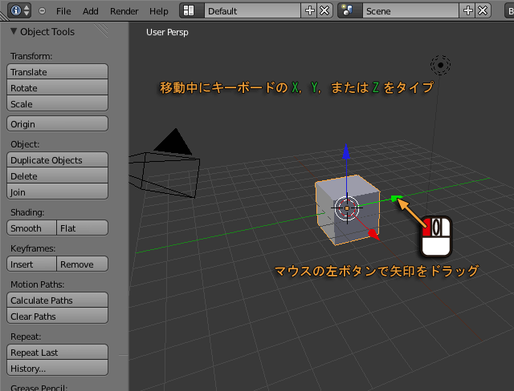
移動を確定するにはキーボードの スペースバー か [Enter] をタイプするか，マウスの左ボタンをクリックしてください．取り消すにはキーボードの [Esc] キーをタイプするか，右ボタンをクリックしてください．
図形を選択した後，道具棚 の Object Tools の Transform の Rotate ボタンをクリックするか，キーボードの R のキーをタイプしてください．マウスの移動に連れて（マウスボタンを離した状態で）物体が回転します．特定の軸を中心に回転するには，回転中に X，Y，あるいは Z のキーをタイプしてください．
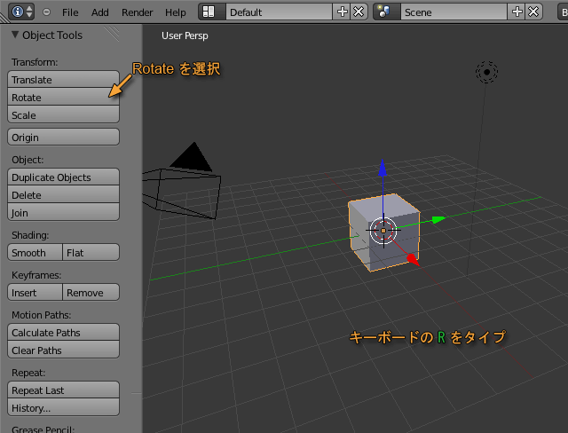
回転を確定するにはキーボードの スペースバー か [Enter] をタイプするか，マウスの左ボタンをクリックしてください．取り消すにはキーボードの [Esc] キーをタイプするか，右ボタンをクリックしてください．
図形を選択した後，道具棚 の Object Tools の Transform の Scale ボタンをクリックするか，キーボードの S のキーをタイプしてください．マウスの移動に連れて（マウスボタンを離した状態で）物体が均等に拡大縮小します．特定の軸に沿って拡大縮小するには，拡大縮小中に X，Y，あるいは Z のキーをタイプしてください．
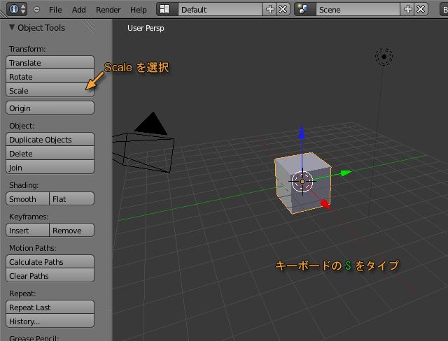
拡大縮小を確定するにはキーボードの スペースバー か [Enter] をタイプするか，マウスの左ボタンをクリックしてください．取り消すにはキーボードの [Esc] キーをタイプするか，右ボタンをクリックしてください．
選択した図形を削除するには [Delete] キーか X をタイプしてください．「OK?」の表示をクリックすれば，図形が削除されます．削除したくなければマウスを「OK?」の表示のところから移動してください．
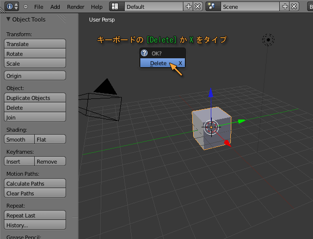
図形に対する操作は [Ctrl]-Z をタイプすれば取り消すことができます．また，取り消した操作を再度実行するには [Shift]-[Ctrl]-Z をタイプしてください．
Blender を終了するには [Ctrl]-Q をタイプするか，3D View の左上にある File メニューから Quit Blender を選んでください．[Ctrl]-Q をタイプしたとき Quit Blender という表示があられますから，それをクリックしてください．．
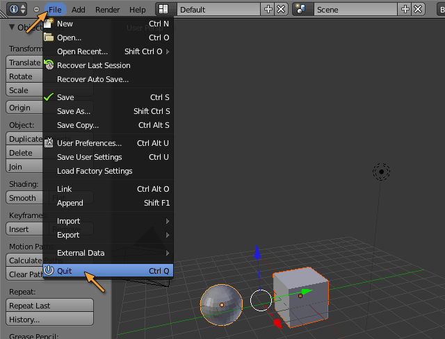
なお，Blender のウィンドウの右上の「×」をクリックすると Blender はデータを保存していなくてもいきなり終了してしまいますが，Blender を起動したときに現れる画面で Recover Last Session を選べば，終了前の状態を回復することができます（これは quit.blend というファイルを開きます）．
とりあえず，最初に表示される立方体から，目的の形を作ってみます．もう一度 Blender を起動してください．
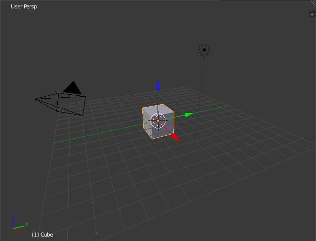
テンキーの 1 をタイプして xz 平面（正面図）に切り替え，テンキーの 5 をタイプして直交投影に変更してください．
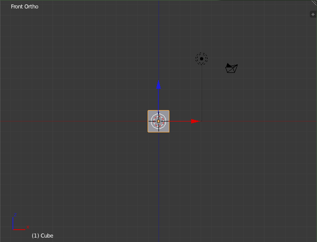
マウスの中ボタンを回して，画面表示を適当な大きさにします．
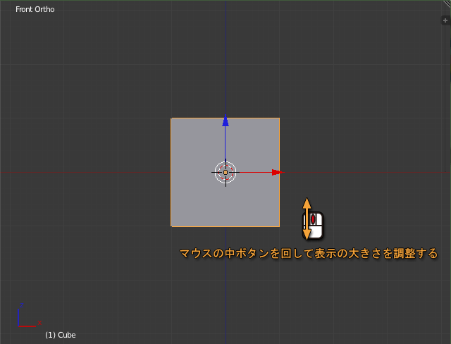
この立方体を z 方向（上方向）に移動します．図形を移動できるようにするにはマウスを直線にドラッグするか，G をタイプしてください．
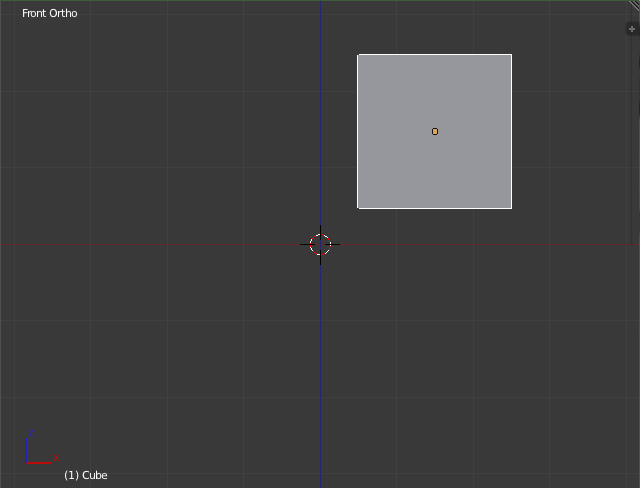
その後 Z をタイプすれば，移動を z 方向（上下方向）に限定できます．
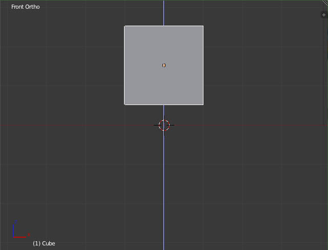
マウスの左ボタンをクリックするか，スペースバーあるいは [Enter] をタイプすれば，移動が完了します．移動をやめたいときには右ボタンをクリックするか [Esc] をタイプしてください．また，移動完了後でも [Ctrl]-Z をタイプすれば，以前の状態に戻ります．なお，青い矢印を左ボタンでドラッグしても，同じ移動ができます．
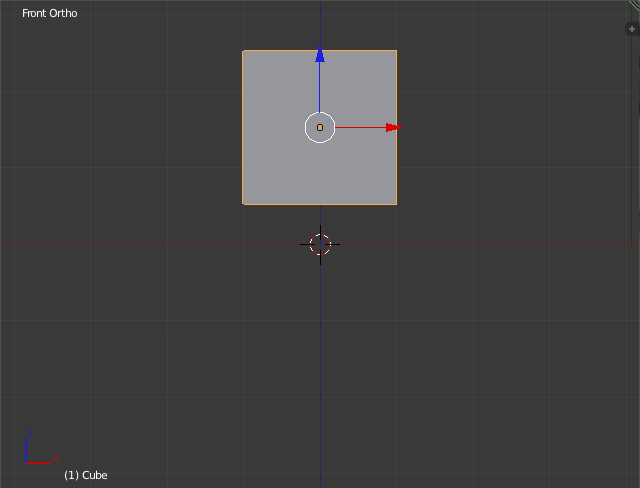
この図形を x 方向（横方向）に引き伸ばします．S をタイプしてください．その後 X をタイプして，引き伸ばし方向を x 方向に限定します．変形が完了したら，マウスの左ボタンをクリックするか，スペースバー または [Enter] をタイプしてください．
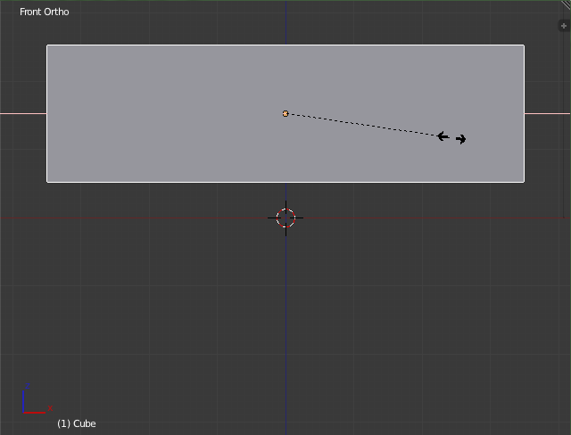
引き伸ばしを確定したら，テンキーの 7 をタイプして，上面図に切り替えます．
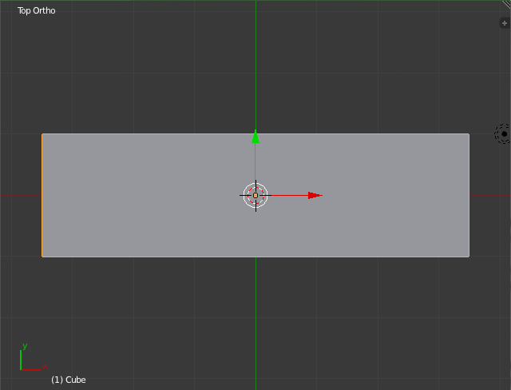
これを y 方向に引き伸ばします．S をタイプした後 Y をタイプしてください．変形が完了したら，マウスの左ボタンをクリックするか，スペースバー または [Enter] をタイプしてください．
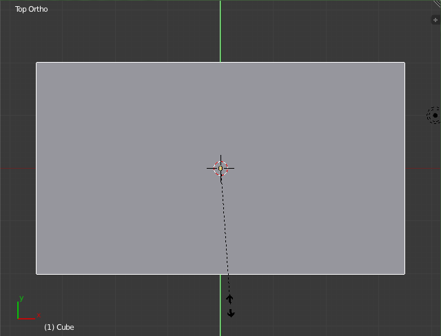
引き伸ばしを確定したら，今度は [Tab] キーをタイプして編集モードに切り替えます．編集モードでは，選択した図形の頂点や稜線，面などの情報を編集することができます．
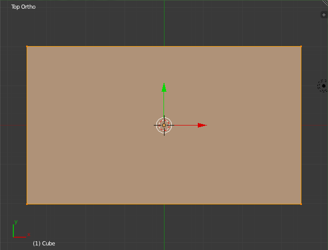
この状態では，頂点が全部選択されています．選択する対象を切り替えるには，画面表示の下にある次のボタンを使います．一番右の立方体のボタンを選択しておくと，手前の面に隠されて見えない部分が選択されないようになります．
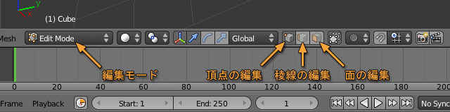
そこで，稜線の選択に切り替えます．また，隠れた部分が選択されないよう，右端の立方体のボタンを選択しておきます．
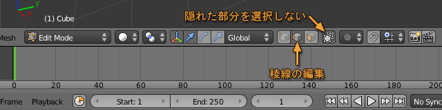
図形の下側の稜線をマウスの右ボタンでクリックして選択します．
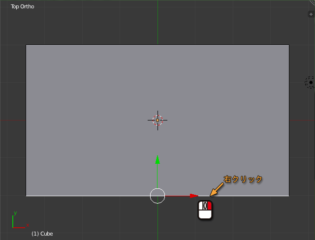
次に，[Shift] キーを押しながら上側の稜線をマウスの右ボタンでクリックしてください．[Shift] キーを押しながら選択すると，それまでに選択されていたものに追加して選択されます．
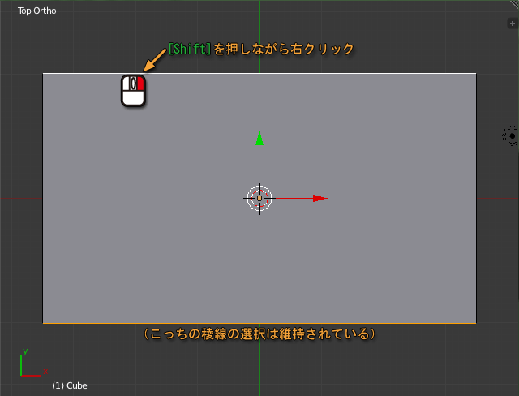
これで図形の上下端の稜線が選択できました．ここで道具棚 の Add: の Subdivide をクリックするか，W をタイプして現れたメニューから Subdivide を選んでください．そして Number of Cuts の右側の三角をクリックして，数字を 4 にしてください．
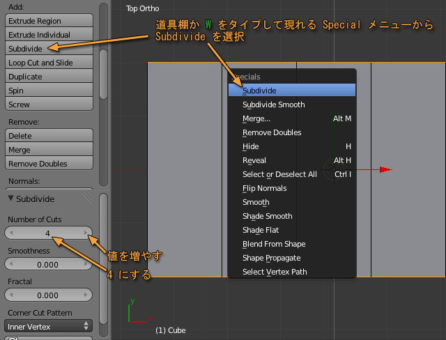
選択した稜線を結ぶように４本の稜線が追加されます．
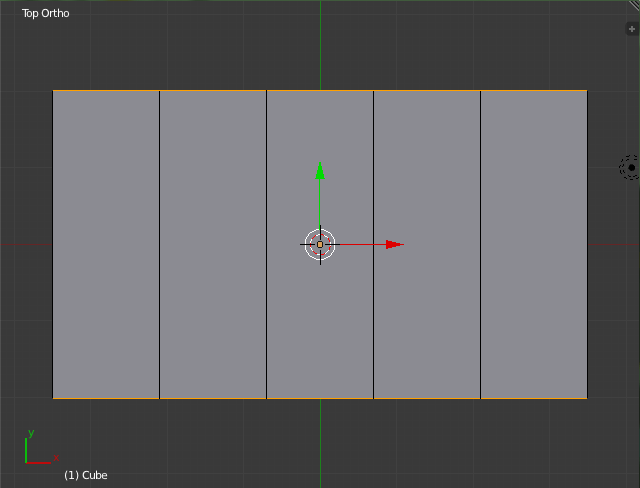
今度は，面の選択に切り替えます．
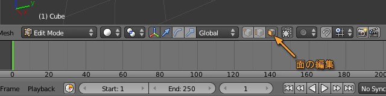
中央の面をマウスの右ボタンで選択します．
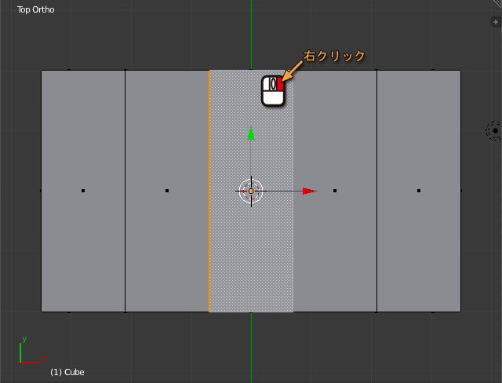
テンキーの 1 をタイプして，表示を xz 平面（正面図）に切り替えます．
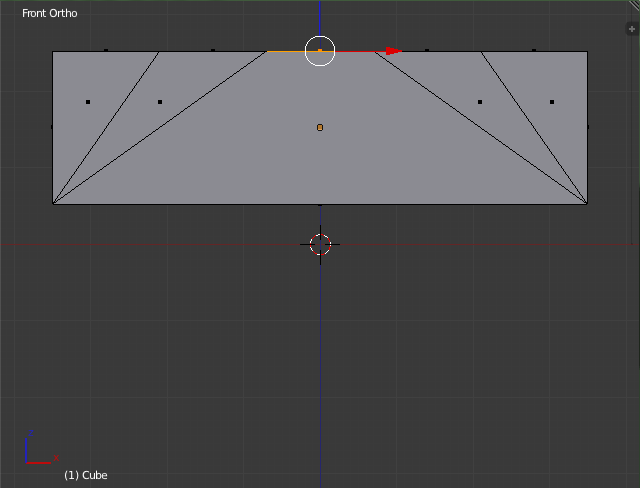
そして G をタイプした後 Z をタイプするか，青い矢印を左ボタンでドラッグするなどして，選択した面を z 方向に移動します．図形の表示位置は [Shift] を押しながらマウスの中ボタンを回すか，[Ctrl] を押しながらテンキーの 8 をタイプして調整してください．移動が完了したら，マウスの左ボタンをクリックするか，スペースバー または [Enter] をタイプしてください．
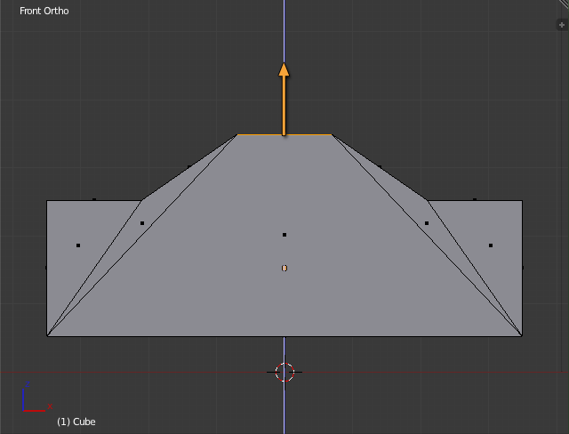
カメラから見る（テンキーの 0 をタイプする）と，こんな感じです．
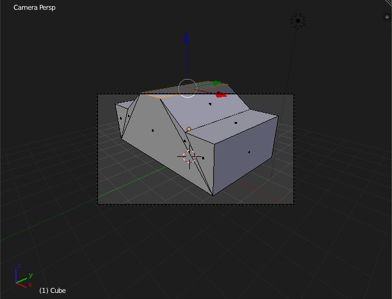
[Tab] キーをタイプすると，編集モードから抜け出ます．
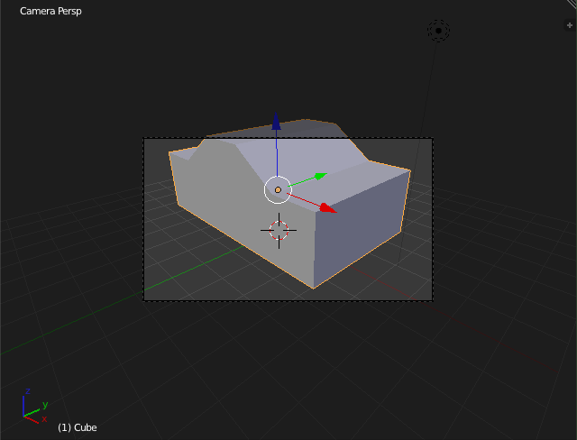
このように，形のデータを作成する作業をモデリングと呼びます．
作成した図形の材質（色等）を設定します．3D View の右側の Property にある Material のボタンをクリックしください．Material のボタンが隠れていれば，Property の境界線をドラッグして引き延ばしてください．
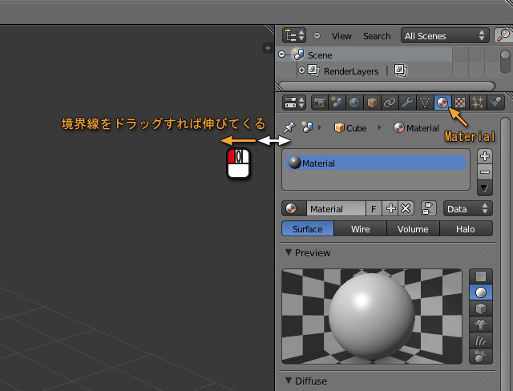
Diffuse の下側の白い部分をクリックします．
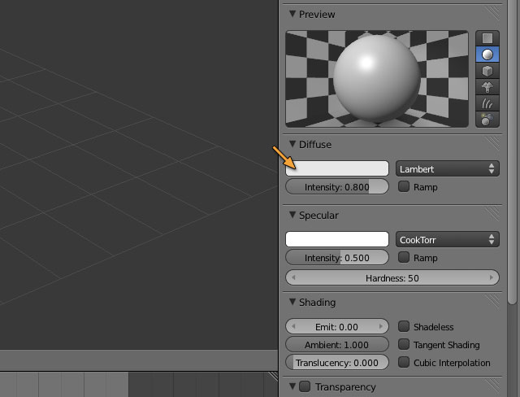
色を選択します．
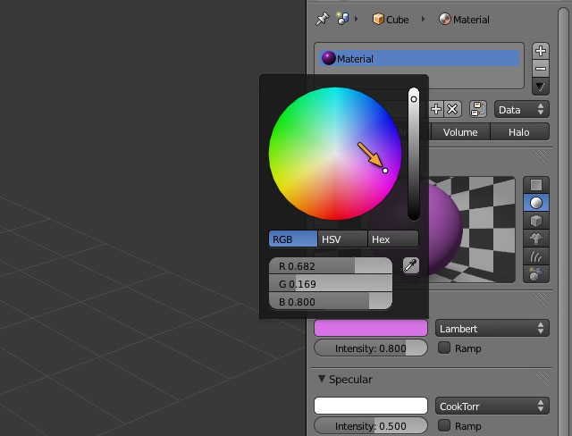
選択した色で陰影が付きます．
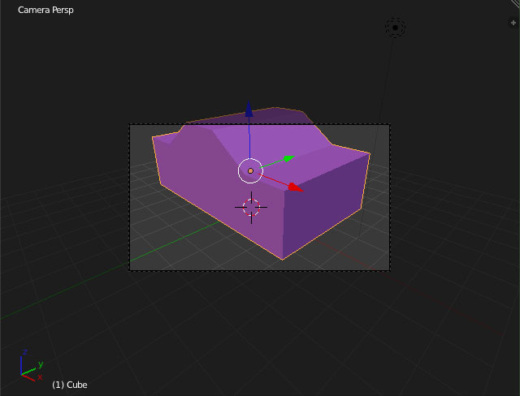
他にも設定できる材質特性は山ほどあるのですが，ここでは割愛します．自分でいじくってみてください．
他の図形を追加します．3D View の左上にある Add のメニューから Mesh を選ぶか，[Enter]-A をタイプして現れたメニューから Cylinder を選択してください．
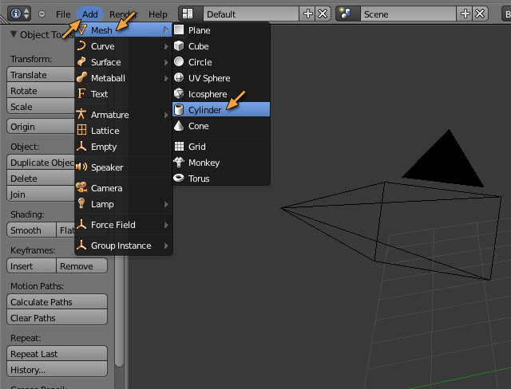
Cylinder （円柱）のサイズなどを設定します．Vertices は断面の頂点数（側面の数），Radius は底面の半径，Depth は円柱の長さです．Depth の両側にある三角をクリックするか，値の部分をクリックしたあと 1 [Enter] とタイプして書き換えて，ここに 1 を設定してください．
作成した円柱は，現在のカメラの方向からは隠れて見えないので，テンキーの 3 をタイプして，側面図に切り替えます．
これを 90°回転します．R をタイプしたあとマウスを動かして回転するか（[Ctrl] を押しながら動かすとキリのいい数値になります），テンキーで 9 0 [Enter] とタイプしてください（画面には表示されません）．回転が完了したら，マウスの左ボタンをクリックするか，スペースバー または [Enter] をタイプしてください．
これを G のキーをタイプするなどして平行移動します．移動が完了したら，マウスの左ボタンをクリックするか，スペースバー または [Enter] をタイプしてください．
テンキーの 1 をタイプして正面図に切り替え，さらに移動します．移動が完了したら，マウスの左ボタンをクリックするか，スペースバー または [Enter] をタイプしてください．
新しく作成した図形には材質が設定されていませんから，右側の Property の Material のボタンをクリックし，現れた New のボタンをクリックしてください．
この後，先ほどと同様に色を設定します．Material.001 は，この材質に自動的に付けられた名前で，自分でわかりやすいものに変更することができます．
この図形を複製します．道具棚の Duplicate Objects をクリックするか，[Shift]-D をタイプしてください．
すると複製されたものが移動できる状態になっていますので，マウスを動かして移動します．X をタイプすれば，x 方向に移動方向を制限できます．移動が完了したら，マウスの左ボタンをクリックするか，スペースバー または [Enter] をタイプしてください．
次に，複製前の図形も同時に選択します．[Shift] を押しながら複製前の図形をマウスの右ボタンでクリックしてください．
テンキーの 3 をタイプして，yz 平面（側面図）に切り替えたのち，[Shift]-D をタイプして複製します．マウスを動かして複製した図形を移動してください．Y をタイプすれば移動方向を y 方向に制限できます．
こういう風にして形を作っていきます．テンキーの 0 をタイプしてカメラ方向から見てみます．
スムージング作成する形状は多面体ですが，スムージングを行えば曲面が表現できます．まず，スムージングしたい対象を選択してください．図形の一部をスムージングしたいときは，[Tab] をタイプして編集モードに切り替えてください．円柱の側面だけをスムーズにしたければ，面の選択に切り替えてから側面の１面を選んで [Shift]-G をタイプし，現れたメニューから Perimeter を選んでください．
道具棚の Shading の Smooth（Deform の Smooth Vertex ではなく）をクリックしてください．スムージングを解除するには，その隣の Flat をクリックしてください．
作成でいる形状は多面体ですが，スムージングを行えば曲面が表現できます．スムージングしたい対象を選択し，"Editing" のボタン（[F9]）の "Link and Materials" のタブにある "Set Smooth" のボタンをクリックしてください．スムージングを解除するには，その隣の "Set Solid" をクリックしてください．
この方法は図形の見かけだけを滑らかにしますので，粗い多面体に適用すると不自然になることがあります．粗い多面体から滑らかな曲面を作成するには，"Modifiers" のタブにある "Add Modifier" のボタンをクリックして，"Subsurf" を選んでください．"Render Levels:" を大きくすると，レンダリングされる形状が滑らかになります．
ファンクションキーの [F12] をタイプするか，Render のメニューの Render Image を選択するか，あるいは Property の Render のボタンをクリックしてから Image のボタンをクリックしてください．カメラから見た光景の画像を作成することができます．このように，データから映像を作成する作業をレンダリングと呼びます．
この画像は光源の位置が右側にあるので左側が暗くなっていますが，光源も図形と同じように移動できます．もちろん，カメラも移動できます．
この画像（静止画）を保存します．ファンクションキーの [F3] をタイプするか，生成された画像の左下にある Image メニューの Save As Image を選択してください．
最初に Bookmarks のところの自分のユーザ名をクリックした後，右側の Save As Image をクリックしてください．untitled.png の untitled の部分は，必要に応じて適当な名前に書き換えてください．
なお，レンダリング結果の画面から 3D View に戻すには，左下のボタンから 3D View を選ぶか，ファンクションキーの [F11] をタイプしてください．
作成したデータを保存するには，File メニューから Save を選えらぶか，キーボードで [Ctrl]-S かファンクションキーの [F2] をタイプしてください．Blender （に限らず CG ソフト）は「よく」異常終了しますので，データを失わないために [Ctrl]-S を左手に覚えさせておくといいかもしれません．
最初に Bookmarks のところの自分のユーザ名をクリックした後，右側の Save Blender File をクリックしてください．untitled.blend の untitled の部分は，必要に応じて適当な名前に書き換えてください．
それでは，作成した図形を動かして，アニメーションを作成してみましょう．その前に，作成した図形の間に親子関係を設定しておきます．親子関係がない状態では，図形はそれぞれ独立して動くことになります．タイヤがボディーと一緒に動くように，ボディを四つのタイヤの "Parent（親）" に指定します．テンキーの 1 をタイプして，正面図を表示してください．
タイヤの部分をひとつマウスの右ボタンでクリックし，その後にボディの部分を [Shift] を押しながらマウスの右ボタンでクリックします．
その状態で [Ctrl]-P をタイプしてください．タイヤの部分をひとつマウスの右ボタンでクリックし，その後にボディの部分を [Shift] を押しながらマウスの右ボタンでクリックします．
すると Set Parent To という表示が現れますから，Object Ctrl P をクリックしてください．キャンセルする場合は，クリックせずにマウスを動かしてください．これを四つのタイヤについて繰り返します（いずれもタイヤを先に右クリックしてから，[Shift] を押しながらボディを右クリックしてください） ．裏面を表示するには，[Ctrl] を押しながらテンキーの 1 をタイプしてください．
次に，テンキーの 7 をタイプして xy 平面（上面図）に切り替えてください．そしてテンキーの - をタイプするか，マウスの中ボタンを回して表示領域を縮小します．そしてボディーの部分をマウスの右ボタンで選択して，ボディーを左側に移動します．赤い矢印をドラッグしても同じことができます．
この状態でキーボードの I をタイプするか，道具棚の Keyframes の Insert をクリックすると，次のようなメニューが現れます．図形の現在位置 (Location) を記録するので，Location を選びます．この操作をキーを打つと言います．
3D View の下にある部分は Timeline といい，アニメーションの制御を行います．この 60 あたりの線をクリックしてください．この番号をフレーム番号といいます．なお，この部分はマウスの中ボタンを回すと拡大縮小，[Ctrl] キーを押しながらマウスの中ボタンを回すと横方向に移動できます．
今度はボディーをもとあった位置付近まで移動し，そこで再び I をタイプするか道具箱の Insert をクリックして，Location を選んでください．以上の処理で第１フレームと第６０フレームにキーを打ったことになります．キーはいくつでも打つことができますので，他のフレームにもキーを打ってみてください．図形はこのキーを補間するように動きます．
Timeline の下にある "End: 250" （終了フレーム）のところをクリックして，ここを 60 に変更してください．そのあと，右側の三角のボタンをクリックすると，アニメーションのプレビューを開始します．
テンキーの 0 をタイプしてカメラから見た動きを確認して見てください．
カメラを被写体に追従させるもし，車が見えている範囲から外れてしまうようなら，[Home] キーをタイプして全体が見えるようにしてからカメラをマウスの右ボタンで選択し，その後 [Shift] を押しながらボディを右ボタンで選択してから [Ctrl]-T をタイプをタイプして現れるメニューから Track To Constraint を選んでください．カメラが常にボディのほうを向くようになります．
このようにして，Timeline 上にいくつかキーを打ったら，Property の Render のボタンをクリックしてください．この Resolution のところで，作成するアニメーション映像の大きさを設定します．初期値はフル HD サイズ (1920×1080) の 50% (960×540) ですが，これだと大きい（作成に時間がかかる）ので，X を 640，Y を 480 に設定します．拡大率を 50% のままにしておけば，これで 320×240 の動画が作成されます．また，"End Frame" が先ほど設定した 60 になっていることを確認してください．そのあと，Output の右側のボタンをクリックしてください．
作成する動画ファイルを保存する場所を指定します．静止画を保存した時と同様に，最初に Bookmarks のところの自分のユーザ名をクリックした後，今度は右側の Accept をクリックしてください．
そして，作成する動画ファイルの形式を選びます．ここでは後の講義の都合上，Ogg Theora を選んでください．
[Ctrl] を押しながらファンクションキーの [F12] をタイプするか，Render のメニューの Render Animation を選択するか，あるいは Property の Animation のボタンをクリックしてください．カメラから見た光景のアニメーション映像を作成することができます．完成までに結構時間がかかります．
レンダリング（アニメーション映像の作成）が終了すると，0001-0060.ogg というムービーファイルができていると思います．
次の (1) の作業を行ってください．それが完了したら，作成したムービーファイルをメールで tokoi@sys.wakayama-u.ac.jp に送るとともに，メールの本文に (2) の内容を書いてください．メールの件名 (Subject) は shori1-03 にしてください．期限は次週の水曜日中までです．
Blender のメニューの日本語化Blender のメニュー表示などを日本語にするには，「File」メニューから「User Preferences...」を選んでください (あるいは [Ctrl] と [Alt] を同時に押しながら U をタイプしてください）．現れたウィンドウの右上の「System」を選択した後，右下の「International Fonts」にチェックを入れると，「Language」と「Translate」という項目が現れます．この「Japanese（日本語）」を選び，「Translate」の「Interface」と「Tooltips」の両方にチェックを入れてください．最後に左下の「Save as Default」とクリックして，このウィンドウを閉じてください．